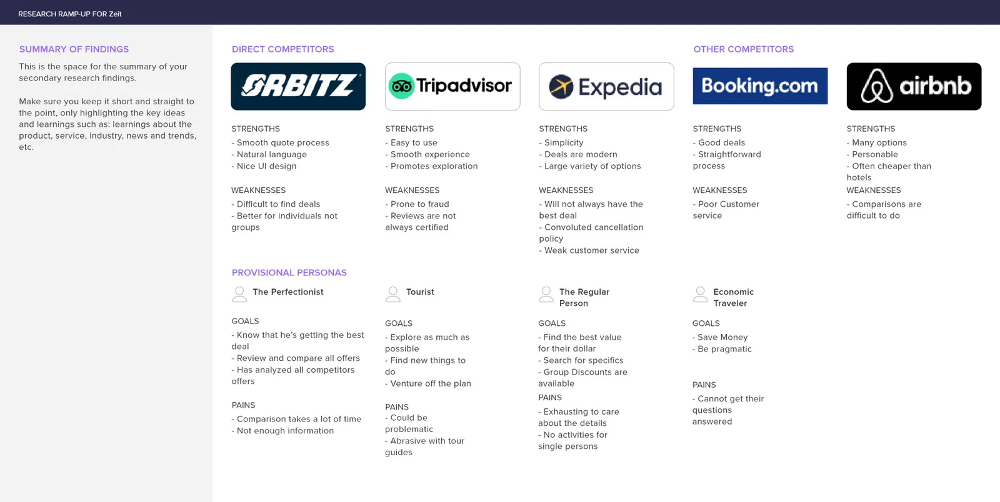
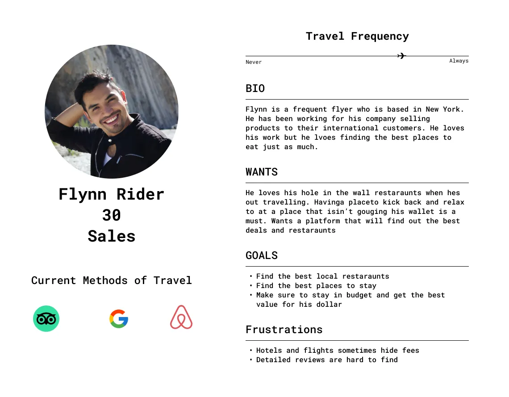
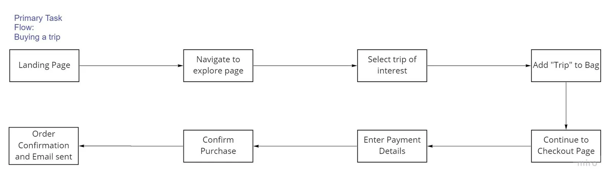
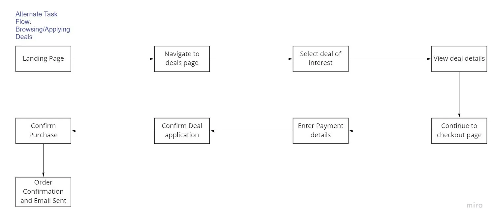
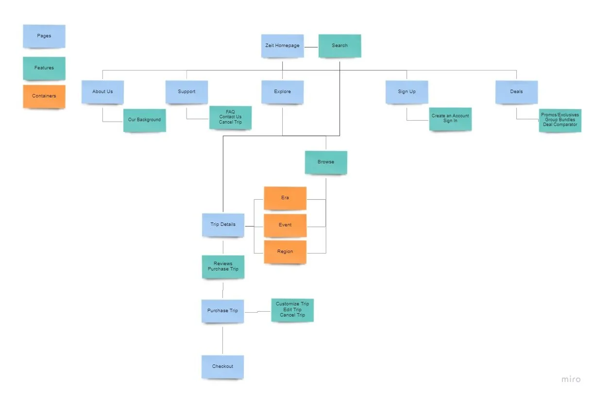
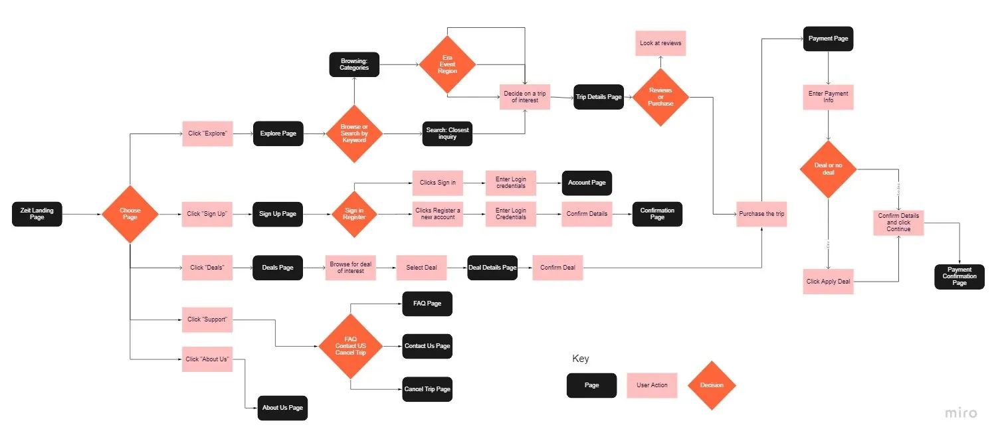
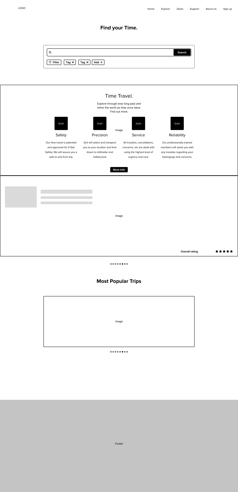
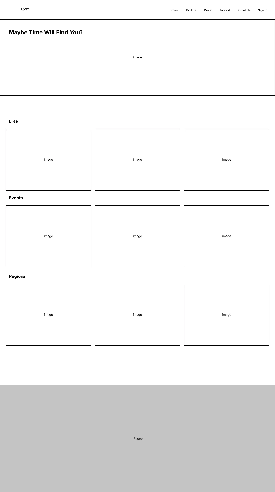
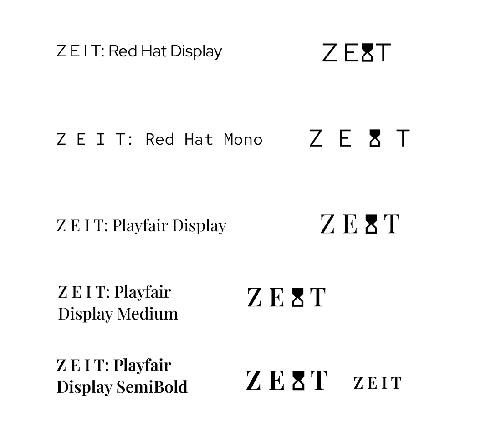


The brief
Zeit is a time travel company aiming to commercialize its travel services. I was tasked with researching user requirements and designing a high-fidelity prototype for a website that sells trip tickets.
In this fictional brief, Zeit is a subsidiary of Richard Branson’s Virgin group that has achieved what was thought impossible: time travel. A total of 289 destinations all over the world, from prehistoric times through today, have been approved and are ready to receive travelers.
Our goal
Through detailed analysis, develop a fresh brand and create a responsive e-commerce website that keeps the highest level of user experience without skimping on the details.
Research
There was not enough information on this new field, so I had to be more thorough in finding the user requirements for a responsive e-commerce website selling time travel.
To gather information about our demographic efficiently, we simplified what we were looking for. We were no longer researching time travel, but the field of travel and tourism itself.
Competitive analysis
Zeit had no direct competitors as the first in its field, but we analyzed indirect travel competitors such as Tripadvisor, Airbnb and Expedia.
One main finding was that users enjoy a streamlined shopping experience, especially for trips. Making information easy to find while showing off imagery of the location is what sells a trip.
We also found what competitors lacked: an overcluttered experience where the home page shows too much information. This slowed users down and made them uncomfortable.

Personas
We narrowed our target down by type of traveler, as in the provisional personas above, and picked the one that would give us the most usable data. Our main persona became the semi-frequent flyer with a detail-focused outlook.

Interviews
3 participants, aged 20 to 30, from infrequent to very frequent travelers.
- Comparisons are a necessity, not a luxury
- Information availability is a must
- Restrictions and hidden fees must be removed or made transparent
- Everyone loves a good deal
- Ample information provides both mental and physical comfort
- Reviews from other travelers are a basic requirement for all commerce
Define and structure
Next, I looked at the experience from the other side of the table: the user’s mental flow and how they would move through the website. That helped identify a creative direction and lay the foundation of the product.
Task flows
These flows gave me a skeleton for how a user would purchase a trip, a model to refer back to when iterating on wireframes and low-fidelity mockups.


Sitemap
A visual map of the website’s layout and connections gave us something to fall back on whenever the structure got confusing during design.

User flow
I’d argue this is one of the most important artifacts, because it shows the user’s decision paths within the structure. It let me quickly see each use case, flow and experience I wanted to give users.

Design and style
In this phase I decided the theme, branding, layout and UI guidelines. From frames to prototypes, I iterated through several design patterns and learned the flaws of each through critiques.


The UI kit, components and branding were decided here. The aim was a refined yet exploratory feeling that would get users excited and comfortable about time travel.
Logo
I kept the logo a simple, minimal wordmark with an hourglass as the main subject. I later dropped the hourglass when it lost its purpose; the final decision came down to the last iteration.
Playfair Display Semibold was the choice. It resembles the high-end luxury wordmarks we see today, such as Zara and Gucci, and says the experience is one of a kind and luxurious.

The UI kit
It’s everything: the components, colors, typefaces, you name it.

Prototype and testing
This is where the move to high-fidelity prototypes and testing began. Open the Zeit prototype in Figma.
Testing
10 participants took part in a remote, self-paced test of the main use case, run through Maze. Read the full Maze report.
- The prototype had a low misclick rate
- Average time per screen was about 10 seconds
- The search results page needs to be optimized
- Users were frustrated by no way back and no chance to correct errors
- A quicker buying process from the home page, with fewer clicks
- Accommodations should be listed, including disability accommodations
Changelog
- Book now feature on the home page
- More visible navigation bar
- Imagery cleaned up to be more fitting and exciting
- More detailed filters
- An option to leave your own review
- A dynamic calendar on the trip details page
- More detailed checkout forms, a payment summary and a confirmation modal
- Lodging information
- Reviews embedded in trip details, with a separate reviews page kept
Final remarks
This was a difficult project, and research was the hardest phase. The site’s primary goal is to sell trips to whatever time period the user wants to visit, so a streamlined browsing and checkout experience is a must.
One takeaway is that designs should never be rigid. Flexibility is key, and sometimes that means letting go. You don’t have to stick with your original idea just because it came first. Letting the experiences of the people using your product shape your ideas leads to a more well-rounded product.
Second, “user first” truly is king in UX design. Just because something is cool, fancy or functional doesn’t mean users want it. Don’t neglect research; skipping it causes roadblocks down the road.
For the future of Zeit, new features and rounding out existing ones are in the backlog. Each significant change calls for a new round of user testing: measure it with meaningful metrics, learn, iterate, and repeat.